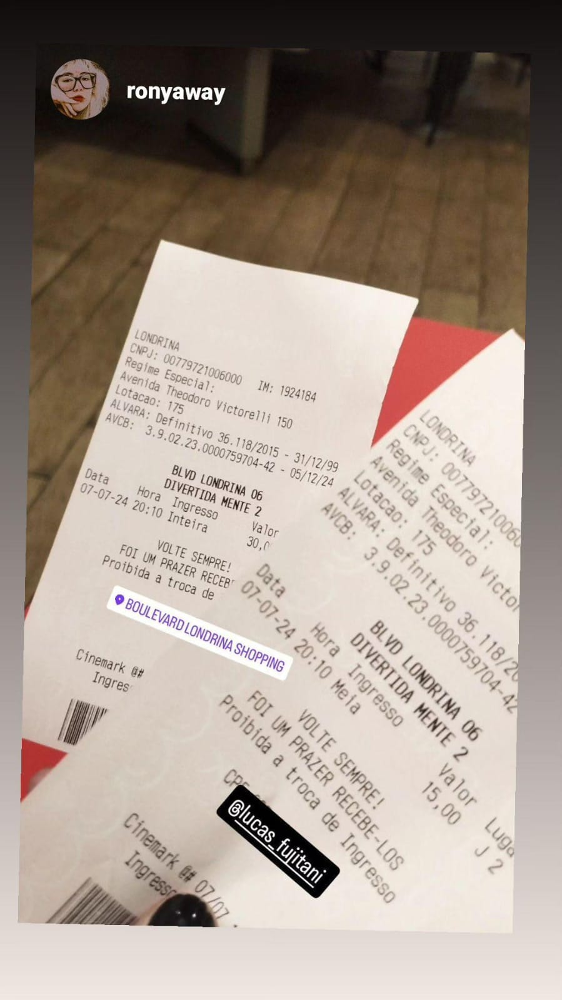
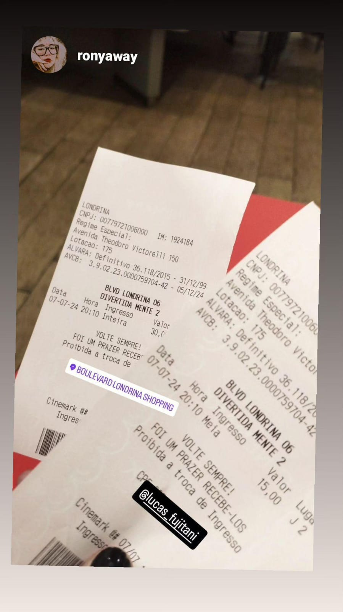

-
Primeiro Encontro
Nos conhecemos pessoalmente no boulevard, evento de bateria e depois fomos assistir Diverti damente 2
 7 de Julho de 2024
7 de Julho de 2024 -
Aniversário de 15 anos
Fomos ao aniversário de 15 anos, bebemos muito "suco de fini"
 13 de Julho de 2024
13 de Julho de 2024 -
Caldeirão Enfeitiçado
Fomos ao caldeirão enfeitiçado, bebemos poções e comemos lanche

 19 de Julho de 2024
19 de Julho de 2024 -
Primeiro Filho, e o mais importante: COMEÇO DE NAMORO
Fomos ao shopping, pegamos um ursinho e NAMORO!!!
24 de Julho de 2024 -
Piquenique
Fomos ao igapo, piquenique e arte (DENGUE?)

 27 de Julho de 2024
27 de Julho de 2024 -
Yakiniku
Fomos ao Yakiniku, porém só você conseguiu aproveitar a comida hahaha

 31 de Julho de 2024
31 de Julho de 2024 -
Outback
A ideia era ir no outback, mas minha fome e ansiedade, fez a gente ir na gelobel
9 de Agosto de 2024 -
Coraline
Fomos assistir coralina
15 de Agosto de 2024 -
Geekday
Fomos ao evente de anime Geekday
16/17 de Agosto de 2024